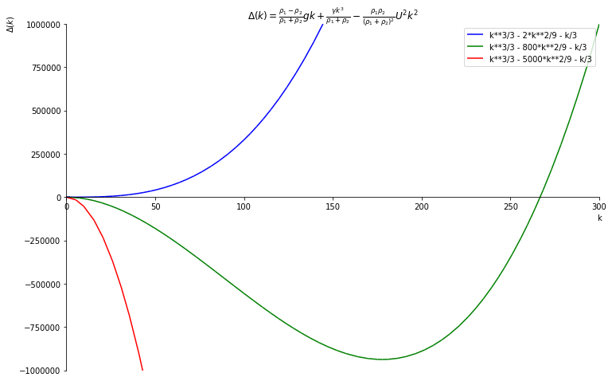

the_plot.show()
March 12, 2019
Today let’s look into some pretty neat SymPy functionality. I was in a fluid dynamics lecture, practicing taking notes with LaTeX on the go and stumbled upon this monstrosity:
\[ \Delta(k) = \frac{\rho_1-\rho_2}{\rho_1 + \rho_2} gk + \frac{\gamma k^3}{\rho_1 + \rho_2} - \frac{\rho_1 \rho_2}{(\rho_1 + \rho_2)^2} U^2 k^2 \]
(bonus points for whoever recognizes this!)
We were supposed to draw this for a few example sets of values. All right! I opened up pinta and scribbled a few squiggly lines with my small touchpad, following the blackboard drawings. It looked darn ugly, but that got me thinking. SymPy has parsers, right? Can’t I just parse that LaTeX equation into Python and make that plot pretty with matplotlib?
Well, as it turns out, sure…
But it takes some tinkering.
All right, let the tinkering commence! Let’s get straight to the point. For this to run, you’ll need antlr4 (in current Jupyter, you can simply do %conda install antlr-python-runtime from within the Notebook).
We’re going to simply dump the LaTeX string into sympy.parsing.latex.parse_latex, with the important caveat - this needs to be a r"raw string". Otherwise, LaTeX is going to go wild put a carriage return into every \rho.
import sympy
from sympy.parsing.latex import parse_latex
latex_string = r"\Delta(k) = \frac{\rho_1-\rho_2}{\rho_1 + \rho_2} gk + \frac{\gamma k^3}{\rho_1 + \rho_2} - \frac{\rho_1 \rho_2}{(\rho_1 + \rho_2)^2} U^2 k^2"
equation = parse_latex(latex_string)
equationEq(Delta(k), -U**2*k**2*rho_{1}*rho_{2}/(rho_{1} + rho_{2})**2 + (g*k)*((rho_{1} - rho_{2})/(rho_{1} + rho_{2})) + (gamma*k**3)/(rho_{1} + rho_{2}))We can access the variables we’d like to substitute (as SymPy symbols) using equation.free_symbols:
Ideally what I’d like to do is use .subs on the equation to plug in numerical values. To achieve this, it would probably be easiest to turn the symbols into Python variables. However…
… the unordered nature of Python’s set comes back with a vengeance! It’s not too trivial to get these out in the right order. You could try sorted, but one does not simply compare Symbols:
--------------------------------------------------------------------------- TypeError Traceback (most recent call last) <ipython-input-8-f67f3a401c32> in <module> ----> 1 sorted(equation.free_symbols) /progs/miniconda3/lib/python3.7/site-packages/sympy/core/relational.py in __nonzero__(self) 227 228 def __nonzero__(self): --> 229 raise TypeError("cannot determine truth value of Relational") 230 231 __bool__ = __nonzero__ TypeError: cannot determine truth value of Relational
What I ended up doing here is:
U, g, gamma, k, rho_1, rho_2 = sorted(equation.free_symbols,
key = lambda x: str(x) # the literal key part here - just sort them alphabetically!
)
U, g, gamma, k, rho_1, rho_2(U, g, gamma, k, rho_{1}, rho_{2})And now we can simply use subs with a dictionary:
Eq(Delta(k), -U**2*k**2*rho_{1}*rho_{2}/(rho_{1} + rho_{2})**2 + k**3/(rho_{1} + rho_{2}) + k*(rho_{1} - rho_{2})/(rho_{1} + rho_{2}))… or can we? This does not work on rho_{1} and rho_{2}. Here’s why:
Well duh, those are string values when input this way, and "rho_1" != "rho_{1}"!
We could instead do the following:
{rho_{1}: 1, rho_{2}: 2, gamma: 1, g: 1}Will that work?
Finally! However, along the way you may have noticed a simpler way to do this:
simpler_equation = equation.subs({
"rho_{1}": 1,
"rho_{2}": 2,
"gamma": 1,
"g": 1,
})
simpler_equationEq(Delta(k), -2*U**2*k**2/9 + k**3/3 - k/3)Note how this did not need us to even touch equation.free_symbols or mess around with sorted at all! I’m leaving the exploratory part here though - it might help someone looking to access variables in a parse_latex expression.
We may now plot it:
import sympy.plotting
import matplotlib.pyplot as plt
plt.rcParams['figure.figsize'] = 12, 8
k_range = (k, 0, 300)
colors = ["blue", "green", "red"]
U_values = [1, 20, 50]
plots = []
for u, color in zip(U_values, colors):
plot = sympy.plot(DeltaK.subs(U, u), k_range,
show=False,
line_color=color,
legend=True,
ylabel=r"$\Delta(k)$",
ylim = (-1e6, 1e6),
xlim = (0, 300),
title = f"${latex_string}$",
)
plots.append(plot)
plots[0].extend(plots[1])
plots[0].extend(plots[2])
the_plot = plots[0]
the_plot.show()And, while not beautiful, it’s much more pretty than what I got together with pinta!